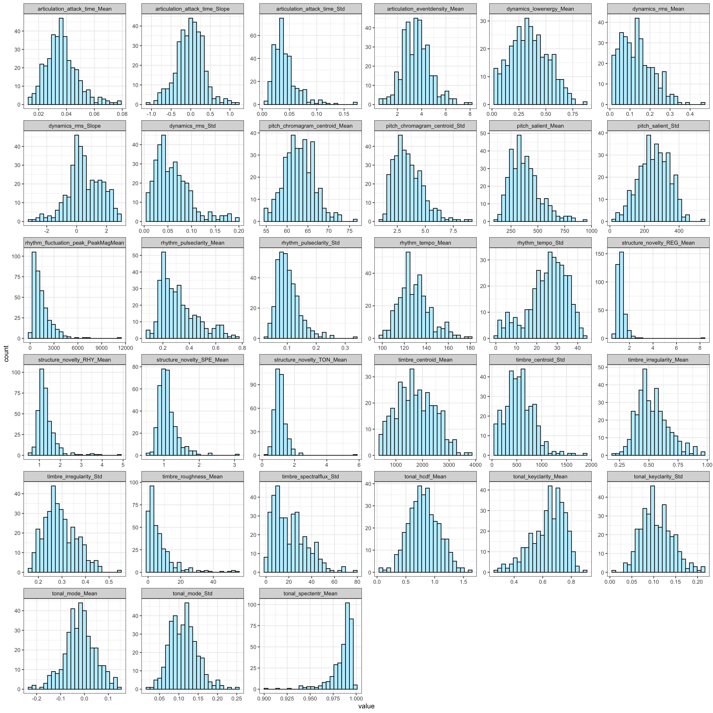
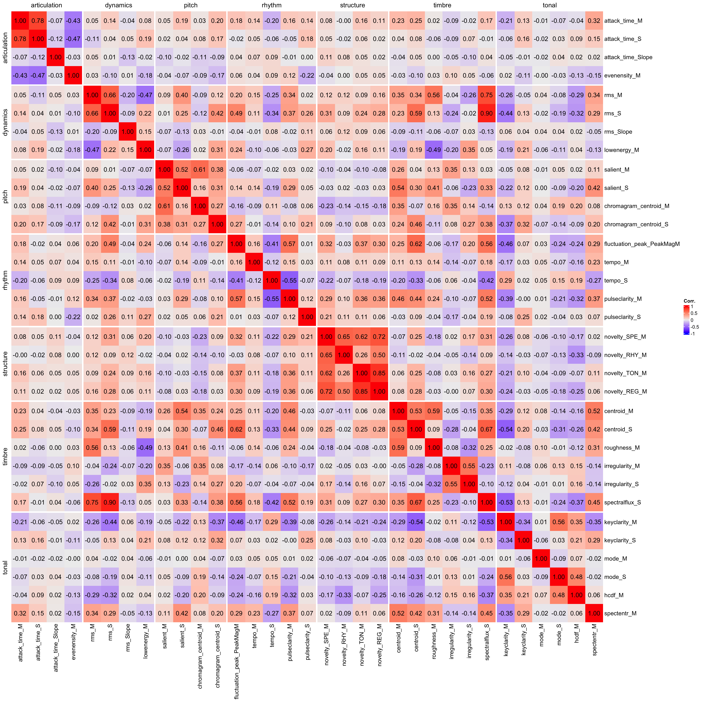

Audio features for MUSIFEAST17 dataset extracted with MIR Toolbox.
MUSIFEAST-17 (MUsic Stimuli for Imagination, Familiarity, Emotion, and Aesthetic STudies across 17 genres) is a dataset created by Hazel Aileen van der Walle, Wei Wu, Elizabeth Margulis, and Kelly Jakubowski. It is available at OSF at https://osf.io/5ebz2/. A paper describing the creation of the dataset is under review (van der Walle, H. A., Wu, W., Margulis, E. H., & Jakubowski, K. (under review). MUSIFEAST-17: MUsic Stimuli for Imagination, Familiarity, Emotion, and Aesthetic STudies across 17 genres.).
This section offers two pre-calculated features for the dataset, (1) a full feature set and (2) trimmed 33-feature set. Both of these features have been extracted with the MIR Toolbox (Lartillot et al., 2007), which is a high-level toolbox for extracting low-level features from audio files. The features are extracted from the audio files using a custom set of commands, where all analyses are carried out in windowed analyses (analysis window length vary across the features). The features are stored in a tab-separated text file with the following columns labelled as filename and the feature names.
For the full feature set, we have 241 features, which is a lot considering we have 356 music examples.
2 Reduced, 33-feature set
A trimmed set of features originates from a past paper (Eerola, 2011) and subsequent studies that resorted to a small number of audio-based features (e.g., Laukka et al., 2013). The idea here is to have a set of features that are not too many, but still cover the most important aspects of music. The original set was based on a set of 37 or 39 features, but here we have reduced these into 33 features. These are the features defined and used in past studies (M refers to mean, SD refers to standard deviation, SL refers to slope, and C refers to centroid).
The features are divided into seven categories, which are listed below:
Dynamics
1–3 RMS energy (M, SD, SL)
4 Low-Energy ratio (M)
Articulation
5–6 Attack Time (M, SD)
7 Attack Slope (M)
8 Event Density (M)
Rhythm
9 Fluctuation Peak (M)
10–11 Fluctuation Peak (mag.) (M, C)
12–13 Tempo (M, SD)
14–15 Pulse Clarity (M, SD)
Timbre
16–17 Spectral Centroid (M, SD)
18 Spectral Spread (M)
19–20 Roughness (M, SD)
21–22 Spectral Flux (M, SD)
23–24 Regularity (M, SD)
25–26 Inharmonicity (M, SD)
Pitch
27–28 Pitch (M, SD)
29–30 Chromagram (unwrapped centr.) (M, SD)
Tonal
31–32 Key Clarity (M, SD)
33 Key Mode (majorness) (M, SD)
34 HCDF (M)
35 Spectral Entropy (oct. coll.) (M)
Structure
36 Repetition (Spectrum) (M)
37 Repetition (Rhythm) (M)
38 Repetition (Tonal) (M)
39 Repetition (Register) (M)
However, things have moved on from 2011 and now we have 33 features. From the original features, we have reduced 2 features as obsolete: (Inharmonicity M and SD) cannot be calculated from polyphonic audio. We have also reduced some other features because of high collinearity and frequent missing values in the analyses. Note that only some of these features have received empirical validation in the past (see Lange & Frieler, 2018; Panda, Malheiro, & Paiva, 2023).
3 Feature distributions
The 33 feature set are actually just a list of features names used to trim the full feature set down to 33 features. Here we read the list and filter the full feature set with these names, rename three features for consistency, and plot the distributions of the features.
feature_set <-read.csv('audio_features/feature_set33_matlab.txt',header=FALSE); feature_set<-feature_set$V1keep_vars <-c('filename')df2 <- dplyr::select(df,all_of(c(keep_vars,feature_set)))# rename categories of three featuresnames(df2)[which(names(df2)=='rhythm_attack_time_Mean')] <-'articulation_attack_time_Mean'names(df2)[which(names(df2)=='rhythm_attack_time_Std')] <-'articulation_attack_time_Std'names(df2)[which(names(df2)=='rhythm_attack_time_Slope')] <-'articulation_attack_time_Slope'tmp <-pivot_longer(df2,cols=2:34,names_to='feature',values_to='value')tmp$feature<-as.factor(tmp$feature)ggplot(tmp,aes(x=value)) +geom_histogram(bins =24,fill='lightblue1',color='black') +facet_wrap(~feature,scales='free') +theme_bw()

3.1 Visualise features categories
The features are divided into seven categories, and we have 4-6 features per category. Let’s explore the similarities of the feature categories visually by plotting a heatmap of the correlation matrix of the features. The features are grouped by category, and the correlation matrix is calculated for each feature within the category. In some cases, the features within the categories are clearly distinct from the other categories similar (high correlation) within a category (structure, pitch, and articulation), and some have multiple features but not all that are similar within the category (timbre, tonal, rhythm, dynamics). A more formal would explore the classification accuracy of the feature categories with the feature values that would require a larger dataset, here we just illustrate the way the features are attempting to capture various aspects of music.
Category
Freq
articulation
4
dynamics
4
pitch
4
rhythm
5
structure
4
timbre
6
tonal
6

4 Feature and Ratings
Explore whether features provide any fit for the data. The behavioural ratings can be obtained from OSF, https://osf.io/5ebz2/.
r <-read.csv('behavioural_data/Raw_data_cleaned_final.csv',header=TRUE)r <- dplyr::filter(r,renamed !='60s_LOW_08') # remove eliminated clip that had lyricsS <-summarise(group_by(r,renamed,genre),valence=mean(clip_response.Valence,na.rm=TRUE),arousal=mean(clip_response.Arousal,na.rm=TRUE),.groups='drop')# Make filenames comparabledf2$filename_short <-str_replace_all(df2$filename,'.mp3$','') df3 <-merge(df2,S,by.x='filename_short',by.y='renamed')print(paste(nrow(df3),'Observations x',ncol(df3),'Columns'))
[1] “356 Observations x 38 Columns”
4.1 Predict ratings with features
Just a casual analysis to get a feel for features and emotions, which can typically be mapped together fairly well. This is not a carefully constructed analysis nor contains cross-validation.
Let’s do this with 6 PCA components from 33 features.
pca <-prcomp(df3[,3:35], scale =TRUE, center =TRUE) # do the PCA on training setN <-6m1 <-lm(valence~., data =data.frame(pca$x[,1:N],valence=df3$valence))s1 <-summary(m1)cat(paste0('$R^{2adj}_{Valence}$=',format(round(s1$adj.r.squared,2),nsmall=2)))
\(R^{2adj}_{Valence}\)=0.22
m2 <-lm(arousal~., data =data.frame(pca$x[,1:N],arousal=df3$arousal))s2 <-summary(m2)cat(paste0('$R^{2adj}_{Arousal}$=',format(round(s2$adj.r.squared,2),nsmall=2)))
\(R^{2adj}_{Arousal}\)=0.58
5 References
Eerola, T. (2011). Are the emotions expressed in music genre-specific? An audio-based evaluation of datasets spanning classical, film, pop and mixed genres. Journal of New Music Research, 40(4), 349-366. https://doi.org/10.1080/09298215.2011.602195
Lange, E. B. & Frieler, K. (2018). Challenges and opportunities of predicting musical emotions with perceptual and automatized features. Music Perception: An Interdisciplinary Journal, 36(2), 217–242.
Lartillot, O., Toiviainen, P., & Eerola, T. (2008). A Matlab Toolbox for Music Information Retrieval. In C. Preisach, H. Burkhardt, L. Schmidt-Thieme, & R. Decker (Eds.), Data Analysis, Machine Learning and Applications. Studies in Classification, Data Analysis, and Knowledge Organization (pp. 261-268). Berlin, Germany: Springer.
Laukka, P., Eerola, T., Thingujam, N. S., Yamasaki, T., & Beller, G. (2013). Universal and Culture-Specific Factors in the Recognition and Performance of Musical Emotions. Emotion, 13(3), 434-449. https://doi.org/10.1037/a0031388
Panda, R., Malheiro, R., & Paiva, R. P. (2023). Audio Features for Music Emotion Recognition: A Survey. IEEE Transactions on Affective Computing, 14(1), 68-88.